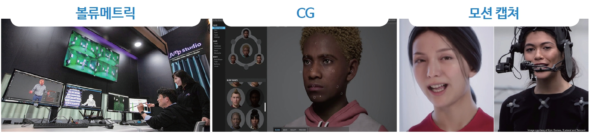
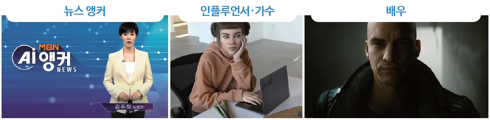
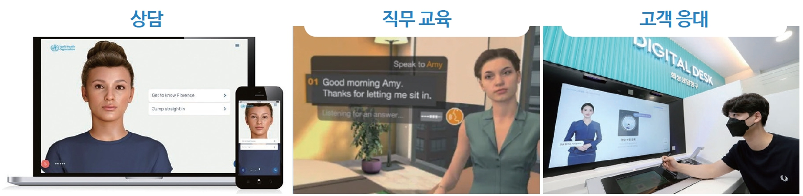
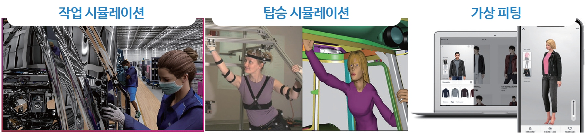
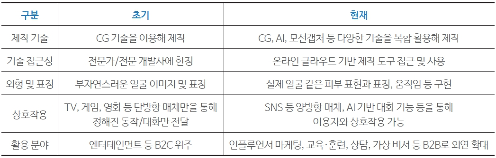

디지털 휴먼

Digital Human 디지털 휴먼 발전 전망과 방송산업 영향
한상열
(소프트웨어정책연구소, 선임연구원)
-
기술 발전에 따라 디지털 휴먼의 제작 효율성과 접근성이 개선되고 대중적인 인지도가 증가하면서, 방송, 교육/상담, 시뮬레이션 등 다양한 분야에서 디지털 휴먼이 활용되고 있다. 방송은 디지털 휴먼과 인간과의 소통을 촉진하고 확산할 수 있는 중요한 매개체이다. 방송 산업은 디지털 휴먼을 이용한 창의적인 방송 콘텐츠 제작 방안을 모색하되, 디지털 휴먼의 올바른 제작과 활용 환경 조성에도 노력해 나가야 한다.
-
1들어가며전 세계적으로 디지털 휴먼 사용이 빠르게 늘어나고 있다. 실제 인간과 비슷하지만 다양한 방식으로 표현이 가능하고 언제 어디서나 고객과의 연결이 가능한 디지털 휴먼은 방송, 홍보, 상담, 교육, 시뮬레이션 등 다양한 분야에서 활용되고 있다. 연구 및 컨설팅 회사인 이머전 리서치(Emergen Research)는 전 세계 디지털 휴먼 아바타(Digital Human Avatar)시장 규모가 2021년부터 연평균 36.4% 성장하여 2030년에는 5,275.8억 달러(약 730조 원)에 이를 것으로 예측하고 있다1.
본 고에서는 디지털 휴먼 제작 기술과 활용 현황을 알아보고 디지털 휴먼의 발전 전망을 토대로 방송 산업에서의 영향과 시사점을 알아보고자 한다.
- Emergen Research(2022). Digital Human Avatar Market By Product Type, By Industry Vertical, and By Region Forecast to 2030.
-
2 디지털 휴먼 제작 기술디지털 휴먼 제작에는 볼류메트릭(Volumetric), CG(Computer Graphics), 모션캡쳐(Motion Capture), AI(Artificial Intelligence) 등 다양한 기술이 사용된다. 볼류메트릭 방식은 실제 사람을 디지털 카메라로 360도 촬영하여 빠르게 3D 디지털 휴먼 이미지를 생성할 수 있다. 마이크로소프트(Microsoft)사의 볼류메트릭 스튜디오는 106대의 카메라를 이용한 초당 60프레임 촬영을 통해 고품질의 3D 모델링이 가능하다.
CG를 활용한 디지털 휴먼 제작방식은 3D 이미지를 만드는 렌더링(Rendering)에 상당한 시간과 비용이 소요되는 작업이나, 작업 중 결과물의 실시간 확인과 수정이 가능한 실시간 렌더링(Realtime Rendering)이 도입되면서 제작 효율성이 크게 개선되고 있다. 오프라인 렌더링은 1 프레임(frame)의 게임 이미지를 생성하는 데 일반적으로 몇 분~몇 시간이 소요되나, 실시간 렌더링은 1초당 수십 프레임 이상의 이미지 생성이 가능하다2.
CG와 딥러닝(Deep Learning) 기술이 합쳐진 ‘뉴럴 렌더링(Neural Rendering)’도 디지털 휴먼 제작에 사용되고 있다. 뉴럴 렌더링은 2D 이미지를 학습하여 고화질의 3D 이미지 결과를 낼 수 있어 복잡한 모델링의 부담을 덜 수 있다3. 엔비디아(NVIDIA)에서 공개한 뉴럴 렌더링 모델인 “인스턴트 NeRF(Instant NeRF)”는 다양한 각도에서 촬영된 소수의 2D 인물 이미지만으로도 수 밀리초(1/1,000초) 안에 3D 인물 이미지 구현이 가능하다.
디지털 휴먼이 사람처럼 움직이는 모습을 구현하기 위해서는 ‘모션 캡쳐(Motion Capture)’ 기술이 사용된다. 이 기술은 센서/적외선 등을 사용하여 인체나 물체의 움직임을 추적해 디지털 형태로 기록한다. 마커(Marker)를 통해 움직임을 추적하는 마커 방식, 센서를 이용한 마커리스(Markerless) 방식, 카메라를 통해 획득한 이미지에 기반하여 AI로 움직임을 추정하는 이미지 기반(또는 비전 기반) 방식 등이 사용된다. 인간과 같은 생생한 감정 표현과 움직임 구현을 위해서 페이셜 캡처(Facial capture), 리깅(Rigging)4, 애니메이션 작업 등이 더해지기도 한다. 자이언트스텝(Giantstep)이 개발한 디지털 휴먼 ‘빈센트(Vincent)’는 리얼타임 렌더링, 모션캡쳐, 머신러닝을 활용해 실제 사람의 표정 변화를 실시간으로 캡처하여 3D 인물 표정 변화로 구현한 바 있다.
그림 1디지털 휴먼 제작 방법 예시출처: SKT(좌), Unreal(중), Epic games, 3Lateral & Tencent(우)
광고나 영화 등에 쓰이는 세밀한 디지털 휴먼 구현은 아직 전문가의 영역이지만, 클라우드(Cloud) 기반의 디지털 휴먼 제작 플랫폼들이 등장하면서 일반인들도 디지털 휴먼을 제작하거나 활용할 수 있는 길이 열리고 있다. 언리얼 엔진(Unreal Engine)의 메타휴먼 크리에이터(Meta Human Creator)가 제공하는 다양한 형태의 디지털 휴먼 프리셋(Preset)으로 수 분 내에 디지털 휴먼 제작이 가능하다. 국내에서는 클레온, 딥브레인AI, 마인즈랩 등이 디지털 휴먼 제작 플랫폼을 서비스하고 있다.
- KCA 미디어이슈&트렌드(트렌드리포트), “게임엔진으로 방송, 영화 제작까지”, Vol.28, 2020.1.
- 황재인(2021.7.), “디지털 휴먼 기술 동향과 문화체육 관광분야 활용 전망”, 한국문화정보원, 문화정보 이슈리포트(제27호)
- 리깅은 3D 모델에 뼈대를 심는 과정으로, 3D 모델의 자연스러운 변형을 위해 각 부위 구분 및 가동 부위 정의(오문석 외, 2021)
-
3디지털 휴먼 활용 현황
3.1.방송
디지털 휴먼은 방송업계에서 아나운서, 쇼호스트, CF 모델, 배우 등 다양한 역할을 수행하고 있다. 감독이나 PD가 원하는 형태로 캐릭터를 연출할 수 있고, 시간과 장소에 구애받지 않는 출연이 가능해 방송 제작의 효율성을 높일 수 있다.
뉴스 방송의 경우, 실제 유명 아나운서의 방송 영상을 학습하고 목소리 생성 인공지능(AI)을 활용한 가상 아나운서의 뉴스 제작이 이루어지고 있다. 스튜디오, 방송장비, 전문인력이 없어도 작가 대본만 있으면 편리하게 뉴스 제작이 가능하다. 예로, MBN은 실제 앵커의 방송 영상을 학습한 디지털 휴먼으로 1분~2분 정도로 구성되는 뉴스를 편성하였다5.
쇼호스트, CF, 드라마/영화 분야에서도 디지털 휴먼이 활발하게 활동하고 있다. 특히, 가상 인플루언서(Virtual Influencer) 디지털 휴먼들의 활동이 두드러진다. 단지, TV나 영화 등 화면 속에 머무르는 것이 아니라, 인스타그램(Instagram), 유튜브(Youtube) 등 소셜미디어를 활용하여 사람들과 적극적으로 소통하고 있다. 가상의 인물이지만, 친구들과 어울리고 여행지를 방문하는 친근한 모습의 사진이나 영상을 소셜 미디어에 공유하고 댓글 등을 통해 실제 존재하는 사람같은 느낌을 전달한다.
유명 가상 인플루언서인 미국의 ‘릴 미켈라(Lil Miquela)’는 인스타그램 팔로워 수가 300만 명을 넘으며 가수, 모델 등으로 활발하게 활동하고 있다. 일례로, 릴 미켈라의 뮤직비디오인 “스피크 업(Speak Up)”은 유튜브 조회수가 700만 회에 이른다.
그림 2디지털 휴먼 활용 : 방송 예시출처: MBN(좌), 릴 미켈라 인스타그램(중), Unity(우)
브라질의 가상 인플루언서 ‘루두 마갈루(Lu do Magalu)’는 팔로워 수가 600만 명에 이르며 다양한 제품 리뷰어로 활동하고 있다. 국내 가상 인플루언서인 로지(Rozy)도 12만 명이 넘는 팔로워를 보유하고 있으며 광고 출연을 시작으로 가수 데뷔, 드라마 출연 등 다양한 방송 활동을 하고 있다. 이처럼, 대중의 관심에 따른 홍보 효과와 모델, 배우, 가수 등 다양한 방송을 만들어낼 수 있는 확장성 등이 디지털 휴먼 수요를 이끌어 가고 있다.
- MBN뉴스(m.mbn.co.kr/tv/845, 2022.9.20. 접속)
3.2.상담/교육
디지털 휴먼에 챗봇(Chatbot), 대화형 AI(Converational AI)를 접목하여 이용자와 간단한 대화 등 상호작용이 가능해지면서 상담이나 교육 분야의 활용도 가능해지고 있다. WHO(World Health Organization)는 디지털 휴먼 ‘플로렌스(Florence)’를 금연 상담에 이용하고 있다. 플로렌스는 스페인어, 중국어 등 5개의 언어 구현이 가능하며, 일련의 대화형 질문을 통해 상담자의 특성을 고려한 맞춤형 개인 금연 계획을 제공할 수 있다.
테일스핀(Talespin)이 제공하는 기업 직무 교육 콘텐츠는 피교육자가 디지널 휴먼과의 대화를 통해 특정 업무 상황을 훈련할 수 있다. 가령, 직원이 조직의 리더가 되어 부하 직원 역할을 맡은 디지털 휴먼과의 대화를 연습하면서 리더십 기술을 배울 수 있다.
그림 3디지털 휴먼 활용 : 상담/교육 예시출처: WHO(좌), 테일스핀(중), 신한은행(우)
무인점포 등 24시간 고객 응대가 필요한 곳에서도 디지털 휴먼 수요가 생기고 있다. 무인 자동화 편의점이나 무인 은행 점포에 디지털 휴먼을 배치하는 사례들이 나오고 있다
3.3.시뮬레이션
최초의 디지털 휴먼으로 알려진 ‘보잉맨(Boeing Man)’은 1964년 보잉사의 연구원이 비행기 조정석 설계 연구를 위한 시뮬레이션(Simulation) 목적으로 만들었다6. 사람이 실제 실험해보기 어려운 장비나 설비를 구축할 때, 디지털 휴먼을 이용한 시뮬레이션은 안전성이나 효율성 확보에 도움을 줄 수 있다. 엔비디아의 옴니버스(Omniverse) 플랫폼은 실제와 유사한 가상 공장에서 일하는 디지털 휴먼을 시뮬레이션하여 실제 사람이 가장 효율적으로 작업할 수 있는 동선을 설계할 수 있다. 마쓰다(Mazda)는 차량 문의 조작성 및 승하차감을 개선을 위해 차량 문을 열고 내리는 디지털 휴먼 시뮬레이션을 활용한 바 있다.
그림 4디지털 휴먼 활용 : 시뮬레이션 예시출처: 엔비디아(좌), 지멘스(Siemens)(중), style.me(우)
디지털 휴먼을 이용한 시뮬레이션은 소비자 시장에서도 활용될 수 있다. 소비자가 자신의 모습과 유사한 디지털 휴먼을 만들고 자신이 입고 싶은 다양한 옷을 입혀보는 가상 피팅(Virtual fitting) 서비스는 의류 쇼핑의 고질적인 문제인 반품률을 낮추고 소비자 만족도를 높일 수 있을 것으로 기대되고 있다.
- HistoryofInformation.com(www.historyofinformation.com/detail.php?entryid=1041., 2022.9.20. 접속)
-
4디지털 휴먼 발전 전망디지털 휴먼은 CG와 AI 등 제작 기술 발전에 따라 제작 효율성과 사실성이 증가하고, 다양한 방송 매체를 통해 사람과의 친밀감을 높여가고 있다. 또한, 일부 영화, 게임 등 B2C(Business to consumer) 시장을 넘어 다양한 방송·홍보 활동, 상담/교육, 시뮬레이션 등 B2B(Business to Business) 시장 영역으로 활동 영역이 넓어지고 있다.
시장 확대와 함께 디지털 휴먼의 의인화 수준을 높이기 위한 시도들은 계속될 것으로 보인다. 로봇 등 인공물의 외모가 인간과 닮을수록 사람들은 그 익숙한 느낌을 선호하며, 외형이나 움직임 등이 인간과 더 비슷해지기를 기대한다.표 1디지털휴먼 초기와 현재 비교출처: 한상열(2022.1.14.), “메타버스 新인류, 디지털 휴먼”, SPRi 이슈리포트
외형만 닮은 것이 아니라 사람처럼 대화하고 반응하는 디지털 휴먼에 대한 수요도 증가할 것으로 보이며, 이를 구현할 수 있는 AI 대화·감성 기술의 중요성이 커질 것으로 전망된다. 현재 대부분의 디지털 휴먼과의 대화는 정해진 대화 시나리오와 데이터를 기반으로 한 정보 교환에 가깝다. 다양한 상황에서 사람처럼 자연스러운 대화를 이어나갈 수 있어야 상담/교육 등 높은 상호작용성을 요하는 분야의 활용성을 증대시킬 수 있어 대화형 AI 기술의 고도화가 필요하다. 또한, 감성 AI를 통해 인간의 얼굴이나 표정, 자세 분석으로 현재 감정을 파악하고, 디지털 휴먼의 표정이나 자세 변화를 통해 적절한 감정 반응을 제공할 수 있다면, 디지털 휴먼과 사용자 간 친밀감 형성 및 서비스 몰입도 향상에 도움이 될 것이다.
향후 글을 요약하거나 이미지를 만들 수 있는 초거대 AI(Hyperscale AI)가 디지털 휴먼에 접목되면, 인간과 협력하고 업무를 지원하는 역할 또한 기대할 수 있다. LG AI 연구원이 개발한 AI 아티스트(AI Artist) ‘틸다(TILDA)’는 LG의 초거대 AI인 ‘엑사원(EXAONE)’을 두뇌로 사용하는 디지털 휴먼이다. 틸다는 ‘금성에 핀 꽃’이라는 주제로 3,000장이 넘는 이미지를 만들고, 이에 영감을 받은 패션 디자이너가 의류를 제작·전시하는 협업이 이루어진 바 있다7.
현재 가상 세계에 주로 머물고 있는 디지털 휴먼이 향후 자동차, 로봇 등 물리적 객체와의 연결·융합을 통해 현실 세계까지 활동 영역을 확대할 가능성도 점쳐진다. 삼성전자가 ‘CES(Consumer Electronics Show) 2022’에서 제시한 ‘사용자 맞춤형 미래 홈(Home)’ 개념에서는 디지털 휴먼이 가정용 로봇들을 조종하여 청소 등 집안일을 관리하는 집사 역할을 수행한다. 자율자동차 내 디스플레이를 통해 비서나 강사의 모습으로 디지털 휴먼이 활용되는 개념도 등장하고 있다.- 노우리.(2022). “LG AI 틸다, 세계 3대 광고제 ‘뉴욕 페스티벌’서 금·은 수상.” <파이낸셜뉴스>. 7월 17일.
-
5디지털 휴먼이 방송산업에 미칠 영향과 제언디지털 휴먼이 방송업계에서 수행하는 역할이 늘어나면서 기존 방송계에서 불가능했던 새로운 시도들도 이루어지고 있다. 고인이 된 배우와 가수를 디지털 휴먼으로 구현하여 기존에 없던 새로운 감동과 영감을 주기도 한다. 외모나 나이, 기존 이미지 등으로 방송 출연이 어려웠던 사람들은 디지털 휴먼이 새로운 정체성을 부여할 수도 있다. 디지털 휴먼은 시공간적 한계를 벗어난 상상력으로 계속해서 진화하고 방송 콘텐츠 제작 지평 확대에 기여할 것으로 기대된다.
하지만, 방송에서 디지털 휴먼을 제작·활용하는 경우에 고려해야 할 점들이 있다. 우선 디지털 휴먼을 제작한다는 것은 단순히 외형만을 만드는 것이 아닌 페르소나(Persona)8를 창조하는 것을 의미한다9. 인간 모델은 자신의 개성이나 상황적 맥락에 따른 페르소나가 형성되어 있으나, 디지털 휴먼은 외형적인 이미지만 존재한다. 목표 고객의 수요와 성향을 고려한 마케팅 믹스(Marketing Mix)로 페르소나 기획과 지속적인 관리가 필요하다.
방송업계에서 디지털 휴먼 활용이 늘어나는 추세를 고려하여, 디지털 휴먼의 윤리적 제작과 활용을 위한 자체 가이드라인을 마련하는 것도 고려해볼 필요가 있다. 국내에는 국제인공지능&윤리협회가 발표한 ‘디지털 휴먼 윤리 가이드라인(The Ethics Guideline for Digital Human)’이 있다10. 본 가이드라인에 따르면, 실존 인물을 디지털 휴먼으로 구현할 시에는 해당 인물의 사전 동의를 받아야 한다. 즉, 방송 콘텐츠에서 실존 인물이나 고인을 디지털 휴먼으로 제작할 때는 당사자나 유족의 동의를 받아야 한다.
또한, 방송 콘텐츠에서 디지털 휴먼의 제작과 활용이 인간의 존엄성과 인류 보편의 가치를 저해하지 않도록 개발자와 감독자의 주의가 필요하다. 향후 디지털 휴먼이 인간과 매우 유사해지면, 시청자들이 실제 사람과 혼동하는 일이 생길 수도 있다. 콘텐츠 몰입을 저해하지 않는 수준에서 이용자들이 디지털 휴먼을 인지할 수 있는 정보 표시 방식을 고민해볼 필요가 있다.
디지털 휴먼은 앞으로 인간과 더욱 흡사해질 것이다. 방송은 디지털 휴먼과 인간과의 소통을 촉진하고 확산할 수 있는 중요한 매개체로서, 디지털 휴먼이 사회에 미칠 수 있는 영향력에 유의할 필요가 있다. 디지털 휴먼은 아직 초기 시장인 만큼, 향후 성장 과정을 지속적으로 관찰하고 관련 이슈를 적시에 파악·대응해 건전하고 지속가능한 디지털 휴먼 제작 및 활용 환경을 조성할 수 있도록 노력해야 한다.- “심리학적으로는 타인에게 파악되는 자아, 혹은 자아가 사회적 지위나 가치관에 의해 타인에게 투사된 성격을 의미”(출처: 조선일보, “페르소나 뜻…여러 분야에서 다르게 쓰이는 페르소나의 뜻은?”, 2013.10.29.)
- AI Summit Seoul 2021, “가상 인플루언서, AI를 만나다: Lessons Learned” 세션 토론내용 참조
- 국제인공지능&윤리협회(20220706), “디지털 휴먼 윤리 가이드라인”
-
Reference
- 김상식, “감성컴퓨팅 연구동향”, 융합연구정책센터, 융합weeklyTIP, Vol.130, 2018, pp.1-8.
- 김정환(2022). “방송미디어제작 산업과 게임기술의 융복합”, KCA 2022 미디어 이슈&트렌드 5·6월호(Vol.50)
- 오문석, 한규훈, 서영호, “메타버스를 위한 디지털 휴먼과 메타휴먼의 제작기법 분석”,
- 최보미, 장서진 and 강현민.(2022). 디지털 휴먼 은행원 발화의 의인화 수준이 사용자 경험에 미치는 영향: 사회적 실재감, 친밀감, 신뢰도, 인지된 지능, 유용성을 중심으로. 문화기술의 융합, 8(4), 469-476.
- 한상열(2022.1.14.), “메타버스 新인류, 디지털 휴먼”, SPRi 이슈리포트
- 황재인(2021.7.), “디지털 휴먼 기술 동향과 문화체육 관광분야 활용 전망”, 한국문화정보원, 문화정보 이슈리포트(제27호)
- KCA Monthly Trends(2020.1.), “게임엔진으로 방송, 영화 제작까지”, Vol.28
- Emergen Research.(2022). Digital Human Avatar Market By Product Type, By Industry Vertical, and By Region Forecast to 2030.
- Rızvanoğlu, K., Öztürk, Ö., & Adıyaman, Ö.(2014, June). The impact of human likeness on the older adults’ perceptions and preferences of humanoid robot appearance. In International conference of design, user experience, and usability(pp. 164-172). Springer, Cham.